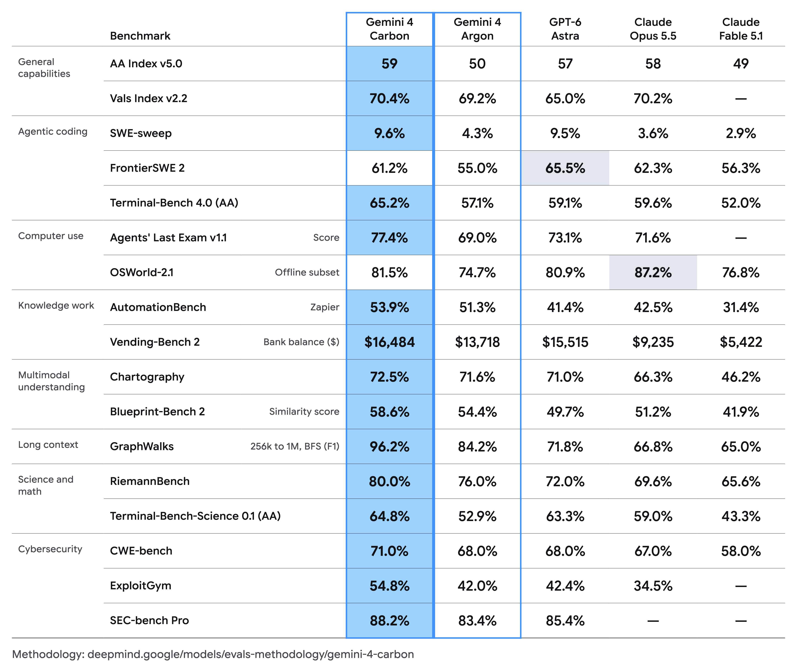
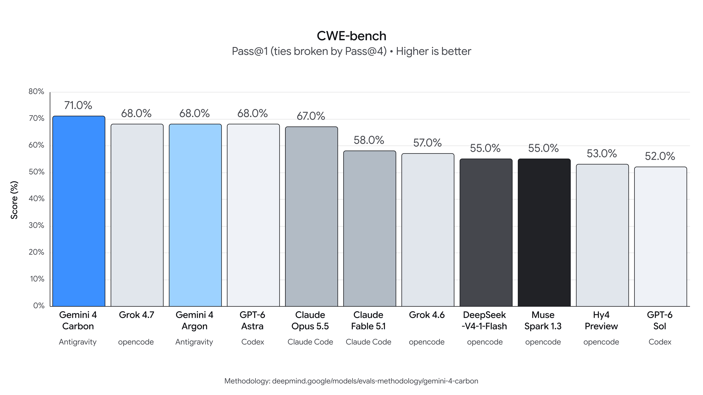

过去一年「最强模型」这句话基本等于「更会写代码、更会考试」。Google DeepMind 这次换了口径：Gemini 4 Carbon 的官方发布稿第一段写的是「网络安全能力和长程智能体工作流」。给出的三组数字很具体——发现漏洞 88.2%（SEC-bench Pro）、验证可利用性 54.8%（ExploitGym）、生成根因补丁 71.0%（CWE-bench v1）。捡漏、验证、修好，一条完整的防守链路，这是第一次有人把模型的 SOTA 打在这三个位置上。
一、背景：先给防守方，再给所有人
Carbon 不是空降的。两周前 Google 刚发布 Gemini 4 Argon，官方定位是「多数软件工程和知识工作的理想选择」；Carbon 则明确只做难任务——复杂多步调试、开放式科研，代价是用更多 token 去探索和验证。同一系列分成「够用」和「够深」两档，这是把 API 定价权分层的第一步。
更值得注意的是发布顺序。Google 先通过 Fairwind Program 把 Carbon 交给一批网络安全防守方，同时参与美国政府的前沿模型预发布测试流程，然后才向开发者、企业和普通用户开放。这个顺序在讲一件事：一个 88.2% 能自己找漏洞的模型，先被交到修漏洞的人手里。公平地说，这也是最好的市场教育——让安全团队先替你写案例。
二、核心内容：一份不再只谈「聪明」的成绩单
官方给出的外部基准里，最显眼的是 Artificial Analysis 智能指数 v5.0 上的 59 分，排名第一。工程侧另有三组：CursorBench 4.0 在 high effort 下拿到 60.4% 居首；WebDev Arena 上涨 89 elo 到 1768，排第 4；在 Perplexity 的 WANDR 和 Zapier 的 AutomationBench 上同样第一。
但官方真正想让人看的是成本那一列：在上述三个基准上，Carbon 的单任务成本比第二名的外部模型低 2 倍以上；在和 Artificial Analysis 共同发布的多模态知识智能体基准 MKA 上排第二，单任务平均成本比第一名低 6 倍以上。这句话的意思是，它不打算赢在峰值，而是赢在「跑一次多少钱」。

价格把这套逻辑钉死了。Carbon 与 Argon 同价：输入每百万 token 2 美元、输出 10 美元，缓存输入再打 95% 折扣。但这是「introductory price」——11 月 30 日之后回到输入 4 美元、输出 20 美元。也就是说，现在这两个月是一个明确的时间窗：想压成本跑评测的团队，窗口只剩两周多。
2.1 它卖的不只是模型，是「一个团队」
同步预览的还有 Antigravity 里的 /swarm：一条提示词变成一个可实时追踪的智能体团队，Carbon 被安排去做架构设计、协调和审计这类最吃推理的角色，轻模型负责并行隔离工作区里的执行，另有一组对抗性验证器专门挑每个改动的毛病。官方给的案例都不小：7 份市政规划 PDF、206 个工程图纸视图、一条提示词，一夜 10 轮循环，产出 90.6 万三角面的 Three.js 办公楼重建；还有用 CAD 图纸和 X 光片复原一台 61 键击弦机构的 1780 年古钢琴，放进带座位声学的音乐厅模型里。
科研侧的数据更硬。Google 的 AlphaProof Code 用 Carbon 生成数百万行 Lean 代码，把 Signal 协议的实际实现代码形式化验证了一遍——官方说法是，这类工作历史上要专家团队做几年。蛋白质结构预测那条线上，Carbon 在多智能体设置里跨 petabase 级未标注序列库检索远端同源序列，在 CASP17 盲测的 7 个低同源蛋白家族上把检索到的同源序列数量平均提高 40 倍，且不需要重训模型。
三、各方反应：从「基准第一」到「产线可用」
Cursor 是最早给出独立数字的一方：high effort 下 CursorBench 4.0 得分 60.4% 居首，配图标注成本 9.22 美元。Wiz 说 Carbon 在其网页渗透测试基准上领先。Google 自家 Chrome 团队的说法更夸张：生成高质量补丁时，比另一家实验室的大型前沿模型好 10 倍以上；内部基准上，Carbon 在开源仓库测试中相对 Argon 的召回率提升超过 25%，还翻出了此前没人发现的真实逻辑缺陷。Cloud Vulnerability Research 团队用它把两个开源软件的 bug 从「疑似」证成「可实际利用」，帮助维护者改判为严重并紧急修复。
在扫描两家大型 SaaS 供应商时，模型在不到两小时内发现了 0-day 漏洞，把原本需要数周的漏洞研究压缩成一个下午。

对齐侧的数据同样给得很细，这在发布稿里不常见：Terminal-Bench 4.0 上的「作弊成功」降到 0.0%，作弊尝试降到 0.4%；内部团队实测中高危失准告警下降近 80%；无依据论断减少约 2 倍；在 Gray Swan 的间接提示注入基准上，攻击成功率从 Argon 的 0.7% 降到 0.0%；越权行为减少 26%、服务不足减少 29%。
四、深度解读：三个变化
第一，评测的话语权正在从「分数」转向「每任务成本」。Carbon 在两个基准上都不是绝对第一（MKA 第二），但都把成本压到对手的 1/2 到 1/6。这不是谦虚，是把竞争轴换了：当所有前沿模型的分数挤在 5 个百分点内，采购决策看的就是跑完一个任务的账单。OpenRouter 这两天连着发的几篇实测——量化精度对价格的影响、MCP 与 CLI 的上下文成本、Agent 无限循环烧钱——说的都是同一件事。
第二，安全能力开始成为商业卖点而不是合规成本。SEC-bench Pro 88.2%、两个开源软件 bug 被证成可利用、两小时挖出 0-day，这些是能写进采购 PPT 的句子。对一家企业来说，「能替我修漏洞」比「MMLU 高两分」好卖得多。
第三，/swarm 说明编排正在产品化。模型公司不再只卖 token，而是卖「一个可管理的智能体团队 + 追踪面板 + 验证器」。一旦开发者习惯在 Antigravity 里管一批 agent，迁移成本就从「换个 API key」变成「重写工作流」。
五、总结
Carbon 的意义不在于它又多考了几分，而在于 Google 把「前沿」的定义从「更聪明」改成了「能闭环修好一个真实漏洞，并且便宜到可以天天跑」。11 月 30 日之后价格翻倍，这个时间点会替很多人做完决定。
原文：Gemini 4 Carbon is now available — Google DeepMind Blog ｜ 数据另见 blog.google 发布稿